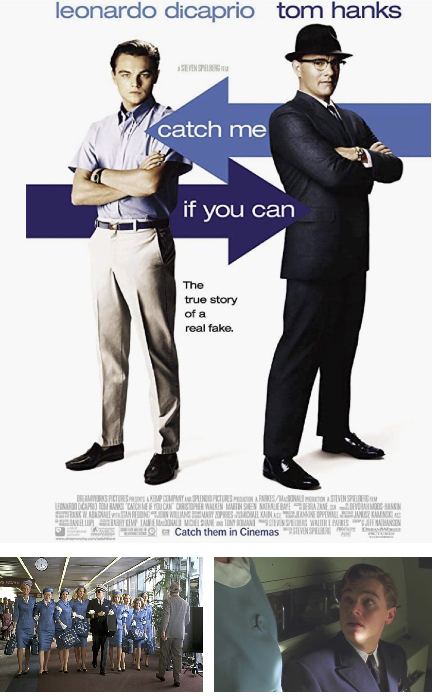

Lait s'il vous plaît
20h
Catch Me If you Can
23h
Léon : The Professional
01h
Clockwork Orange
04h30
No Country For Old Men
06h30
Once Upon A Time In High School
Catch Me If you Can
23h
Léon : The Professional
01h
Clockwork Orange
04h30
No Country For Old Men
06h30
Once Upon A Time In High School
Fin
Infos Pratiques
Infos Pratiques

Catch Me If You Can